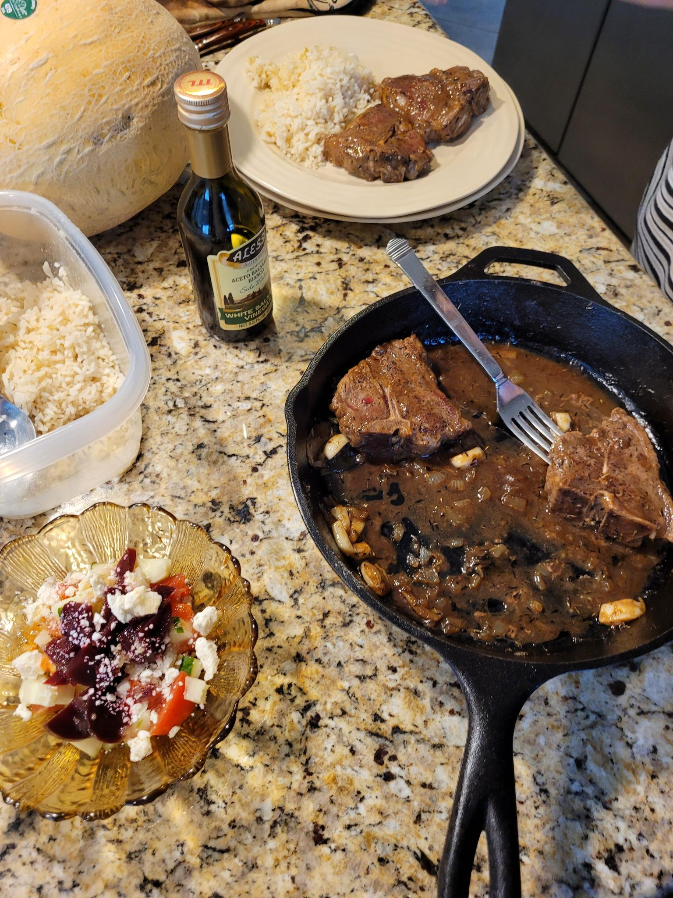

Sauteed Veal Chops

Description
This is a very simple and good recipe for veal with a Mediterranean flair.
Ingredients
- 4 center loin veal chops (approximately 10 oz, each)
- Salt
- Pepper
- 1/4 cup all-purpose flour
- 3 tbsp olive oil
- 2 tbsp chopped parsley
- 1 tbsp chopped onion
- 4 bay leaves
- 4 whole garlic cloves, peeled
- 4 sprigs of fresh thyme (can substitute 1 tsp dried)
- 2 tbsp balsamic vinegar
- 3/4 cup chicken stock
Steps
- Season chops with salt and pepper
- Dredge chops with flour on flat surface
- Brown chops in olive oil over medium-high heat for roughly five minutes per side
- Add onions, garlic, and herbs and stir-fry for three minutes
- Pour balsamic around chops and reduce by half
- Add stock and simmer for 15 to 20 minutes or until tender
- Serve chops and pour remaining sauce onto them
Home